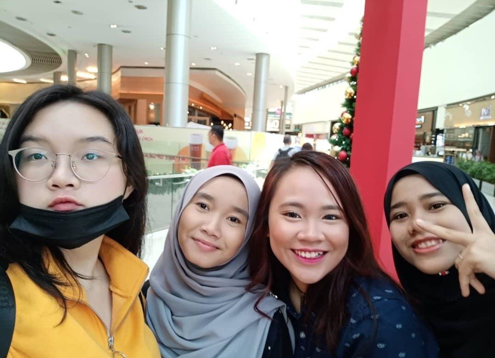
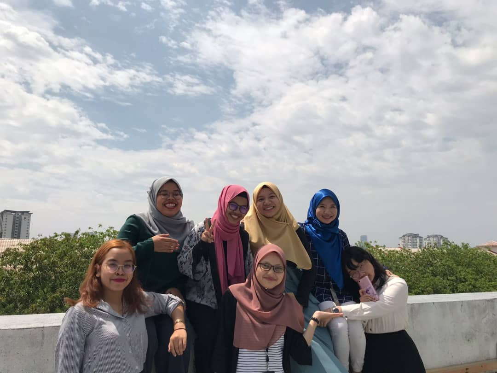

Nur Izzaty is an introvert and also shy to some extend. Thus, it is not suprising for her to have trouble in creating friends. However, Nur Izzaty managed to get herself few close friends that she held dearly.


Nur Izzaty's highschool friend. She have known them since she was 16 years old. Despite not contacting on regular basis,
they are the person that she ended highschool with. At the moment, every each of them took different course and studying at different state in Malaysia.
Nur Izzaty's friend group that she just met when she first started her degree. While one might already drop out, she still keep in contact with the others.

They are the friends that Nur Izzaty close with due to them starting their foundation together.Again, all of them took different course than Nur Izzaty, however they still able to meet each other sometimes at college during recess.